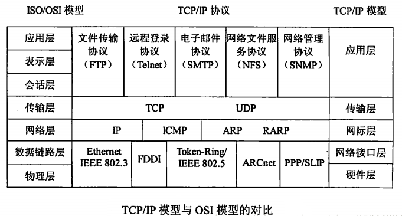

计算机网络笔记01 计算机网络和因特网
1.1 什么是因特网
具体构成描述(硬件和软件组成)
因特网是网络的网络，是一个世界范围的计算机网络。
- 连接数以亿计的设备:
主机/端系统通过服务提供商(ISP)接入因特网进行互联。运行各种网络应用主机/端系统通过通信链路和分组交换机连接到一起- 通信链路:
传输媒介: 同轴电缆、铜线、光线、无线电
传输速率: 带宽- 交换设备:
路由器链路层交换机
协议是对因特网中消息的发送和接收进行控制。
因特网中最主要的协议统称为TCP/IP。
TCP: 传输控制协议
IP: 网络协议，定义了在路由器端系统之间发送和接收的分组格式
HTTP, Skype(Skype的通讯协议是不公开的)
因特网标准是指关于互联网相关的技术与方法论的技术规范，由互联网工程任务组（IETF）创建与发布。
RFC
请求评论: 定义了TCP，IP，HTTP和SMTP等协议。
其他组织: IEEE 802 LAN/MAN标准华委员会制定了以太网和无线WiFi的标准
服务描述(基础设施向分布式应用程序提供的服务)
服务描述:因特网是为应用程序提供服务的基础设施。因特网应用程序运行在端系统上
为各种应用提供通信服务Web, VoIP, email, 在线游戏, 电子商务, 社会网络
提供应用程序编程接口(API)
通信协议
一个协议定义了在两个或多个实体之间交换的报文格式和次序，以及报文发送和/或接收一条报文或其他事件所采取的动作。
机器之间的通信，所有通信都遵照某种协议
- 语法: 定义数据格式、编码等
- 语义: 定义控制信息
- 同步: 定义速度和排序等信息
1.2 网络边缘
端系统=主机位于因特网的边缘，运行应用程序。
client/server模式: 主机有时被划分为客户和服务器这两类。
P2P模式
接入网
接入网：是将端系统连接到其边缘路由器的物理链路。
- 家庭接入:
DSL数据用户线路：以电话线为传输介质的传输技术组合
，利用本地电话公司现有的电话线路连接到DSL中心局。电缆因特网接入：利用有线电视公司现有的有线电视基础设施。频分复用: 按照频段分成不用的信道- FTTH, 拨号, 卫星
- 企业(和家庭)接入:以太网, WiFi
- 广域无线接入:3G, LTE
物理媒体: 被传输器-接收器跨越传播电磁波或光脉冲来发送比特。
引导型媒体
双绞线:五类:100-1000Mbps;六类:10Gbp
同轴电缆:10-100Mbps
光纤:抗干扰性强
非引导型媒体
陆地无线电信道
卫星无线电信道: 同步卫星(时延),近地卫星(需要解决覆盖问题)
1.3 网络核心
网络核心即由互联因特网段系统的分组交换机和链路构成的网状结构。
数据在网络中的传输方式：
分组交换: 报文被分成小的数据库: 分组
每个分组占用全部宽带，用户可以共享网络通信资源。
它是一种存储——转发交换方式，即将到达交换机的分组先送到存储器暂时存储和处理，等到相应的输出电路有空闲时再送出。
由于数据进入交换节点后要经历存储转发这一过程，从而引起的
转发时延（包括接受分组、检验正确性、排队、发送时间等），而且网络的通信量越大，造成的时延就越大，实时性较差。
分组丢失(丢包): 缓存空间大小有限，一个到达的分组可能发现缓存被充满，到达的分组或已排队的分组之一将被丢弃。
可能出现失序，丢失或重复分组，分组到达目的节点时，对分组按编号进行排序等工作，增加了麻烦。
分组交换的两种方法网络层
- 数据报网络(现在网络更多使用这一类)
目标地址确定下一站
数据包路径不一定相同
- 虚电路网络(对延时有要求，即时)
虚电路编号来确定路径
数据包的路径相同
电路交换: 是一种”面向连接”的方式，通过频分复用或时分复用来实现的。
在通信的全部时间内，通话的两个用户始终占用端到端的固定传输带宽
使用电路交换来传输计算机数据时，线路的传输效率往往很低
通信资源被划分成小片
频分复用FMD: 将用于传输信道的总带宽划分成若干个子频带，每一个子信道传输1路信号。为保证各子信带中所传输的信号互不干扰，在各子信道之间设立隔离带。(收音机频道)时分复用TMD: 时间被划分为固定区间的帧(非常短的时间)，每帧又被划分为固定数量的时隙。
| 电路交换 | 分组交换 |
|---|---|
| 面向连接 | 无连接 |
| 电路交换需要先建立连接，所以有时间开销 | 无需建立连接，省掉了一部分时间开销。 |
占用通信链路直到整段报文传输结束链接断开，通信链路利用率低。 |
报文被分割成小的分组，通信链路只在传输一个分组的时候被占用，传输结束链路继续被使用，利用率较高。允许用户的“突发式”传输。 |
建立连接，数据传输稳定，快速，适用于系统间高质量的大数据传输情况。 |
传输大数据时效率偏低，且容易丢失数据。 |
网络中的网络
端系统通过ISP(因特网服务提供商)接入互联网
家庭
公司或高校
接入的ISP直接必须互联
互联的网络非常复杂
分层思想: 去中心， 一个中心容易出现单点故障
经济和国家策略: 不能一家独享，需要多个ISP来竞争
- 全球承载ISP
- 区域ISP
- 对等连接
- 因特网交换点IXP: 允许不同的因特网服务提供商(ISPs)在它们的自动系统之间通过对等协议来交换因特网通信。是一个汇合点，多个ISP在这里共同对等
- 内容提供商网络(如Google): 减少了向顶层ISP支付的费用
1.4 延迟、丢包和吞吐量
时延是数据（一个报文/分组/甚至比特）从网络或链路的一端传送到另一端所需的时间.节点处理时延包括选择输出链路，差错检验等因素。取决于节点的处理性能，一般在毫秒数量级。排队时延 是排队等待接点的输出链路发送数据分组所需的时间。取决于节点的拥塞情况。
排队时延与分组丢失(丢包): 缓存空间大小有限，一个到达的分组可能发现缓存被充满，到达的分组或已排队的分组之一将被丢弃
传输时延 设输出链路带宽为R，将长度为L的分组发送到链路中所需的时间dtrans=L/R传播时延分组在链路上”奔跑”完全程所需的时间。设链路长度d，传播速度s，dprop=d/s
端到端的时延
假设源主机和目的主机之间有N-1台路由器，并且该网络是无拥塞的。那么端到端时延为：dend-end=N(dproc+dtrans+dprop)
吞吐量是网络的发送和接收端传输数据的速率。
瞬时吞吐量: 某个时间间隔内
平均吞吐量: 一段较长时间内
瓶颈链路: 约束着整个端到端的链路吞吐量
因特网的实际情况: 主干网的速度很高，连接的瓶颈在于接入网。
当没有其他干扰流量时，吞吐量近似为沿着源和目的地之间路径的最小传输速率。
1.5 协议层次和服务模型
分层: 将复杂问题分成小问题，分而治之
协议分层
- 应用层: 网络应用程序机器应用层协议留存的地方(HTTP/SMTP/FTP..)
- 运输层: 提供应用成端点之间传送应用层报文的服务(TCP/UDP)
- 网络层: 将
数据报的网络层分组从一台主机移动到另一台主机(IP协议/路由选择协议..) - 链路层: 将整个
帧(链路层分组)从一个网络元素移动到临近的网络元素,一个数据报从源到目的地,可能经过不同链路上不同链路层协议处理, 提供的服务取决于应用于该链路的特定链路层协议.(以太网/WiFi/PPP) - 物理层: 将帧一个一个比特从一个节点移动到下一个节点
实际因特网协议栈比ISO/OSI参考模型少了两层协议:
会话层(数据交换的定界和同步)和表示层(数据压缩/加密/描述),原因是这两层协议由开发者决定是否重要来进行设计。
封装
在每一层，一个分组具有两种类型的字段: 首部字段喝有效载荷子段。有效载荷子段通常是来自上一层的分组。
TCP/IP协议族
 ## 1.6面对攻击的网络 **被放入计算机的有害程序** 恶意软件: 多数恶意软件是自我复制的。 >以病毒形式扩散: 需要某种形式的用户交互来感染用户设备的恶意软件 >以蠕虫形势扩散: 无需任何明显用户交互就能进入设备的恶意软件攻击服务器和网络基础设施拒绝服务攻击(Denial-of-Service/DoS attack)
大多数因特网DOS攻击属于下列三种类型之一:
弱点攻击
带宽洪泛
连接洪泛
相比于来自单一主机的Dos攻击，分布式DoS(Distributed DoS/DDoS)更加难以检测和防范。
嗅探分组
在无线传输设备的附近放一台被动的接收机，该接受机就能得到传输的每个分组的副本。这些分组包含了各种敏感信息，包括口令和隐秘的个人信息等。
记录每个流经的分组副本的被动接受机称为
分组嗅探器
分组嗅探软件如Wireshark等可以对嗅探到的分组进行离线分析，就能得出敏感信息
伪装用户IP哄骗: 将具有虚假源地址的分组注入因特网的能力
生成具有任意源地址、分组内容和目的地址的分组，接收方执行分组内容的命令(eg.修改转发表)。
端点鉴别: 一种使我们能够确信一个报文源自我们认为它应当来自的地方的机制
在相互信任的用户之间的通信是一种例外而不是规则
1.7 计算机网络和因特网的历史
分组交换的发展: 1961～1972
专用网络和网络互联: 1972～1980
网络的激增: 1980～1990
因特网爆炸: 20世纪90年代
最新发展